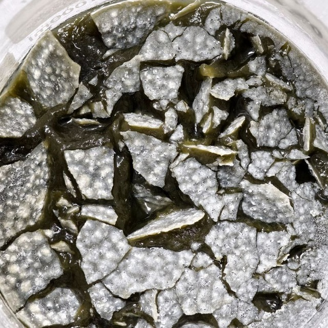

CRISPR-Based Diagnostic Platforms
Points of Care Testing (POCT) Research Group · BUET

Research photo or diagramassets/images/research-1.jpg
Contributing to a structured literature review on CRISPR-based diagnostic platforms, examining CRISPR classes, molecular mechanisms, and pioneering diagnostic technologies. This work evaluates how CRISPR/Cas systems (Cas9, Cas12, Cas13) are being repurposed from gene editing into highly sensitive nucleic acid detection platforms relevant to point-of-care settings.
Key Topics
Cellulose Oxalate Sorbent for Antibiotic Removal
Applied Bioengineering Research Incubator (ABRI) · BUET

Lab / experiment photoassets/images/research-2.jpg
Synthesised a novel cellulose oxalate sorbent derived from waste newspaper through targeted chemical modification. Characterised the material's adsorption behaviour for removing antibiotic residues from simulated wastewater, contributing to sustainable pharmaceutical wastewater treatment. Analytical work involved UV spectrophotometry and FTIR characterisation.